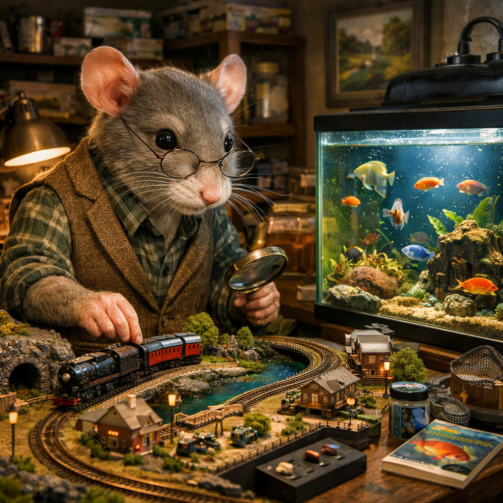

子供のころに好きだったものは、大人になっても心のどこかに残り続けます。 例えば、自然の中で遊んだ記憶、小さな動物への愛情、夢中になった趣味――それらは決して消えることなく、人生の土台として積み重なっていきます。

さらに、大人になると新しい「好き」も増えていきます。 人との出会い、学び、経験、そして深まる理解。 こうして人間の中には、「好きなもの」が少しずつ増え続けていきます。
つまり幸福とは、「好きなものが減らないまま、増えていく状態」とも言えるでしょう。
多くのものは時間とともに失われます。 体力、若さ、環境、人間関係…。
しかし「好き」という感情は違います。 むしろ時間とともに深まり、広がり、豊かになっていく性質を持っています。
これは、人間が単なる物質的存在ではなく、「意味」や「喜び」を蓄積できる存在であることを示しています。
ここで一つの問いが浮かびます。
もし人生が有限ではなく、「永遠」だったらどうなるのでしょうか。
好きなものは増え続け、経験も広がり続ける。 新しい発見、出会い、感動が終わることなく続く――
それは、幸福が“限界なく拡張される状態”と言えるでしょう。
聖書はこの点について興味深い希望を示しています。
「義なる者は地を所有し、そこにいつまでも住む。」
— 詩編 37:29
また、イエスはこう語りました。
「彼らがあなた、唯一のまことの神と、あなたが遣わしたイエス・キリストについて知ること、それが永遠の命です。」
— ヨハネ 17:3
ここで示されている「永遠の命」は、単に終わらない時間ではありません。 神との関係を深めながら、学び、感じ、愛し続ける“質の高い命”です。
もし永遠の命があるなら、人生は「失う前提」ではなくなります。
それらが終わることなく積み重なっていく世界です。
今の人生では、「時間が足りない」「いつか終わる」という制限があります。 しかし永遠という視点では、好きなものは減るどころか、無限に増えていきます。
このように考えると、人間の幸福とは単なる一時的な満足ではなく、
「好きなものが増え続ける状態」
そして
「それを永遠に味わい続けられる可能性」
にあると言えるでしょう。
聖書が示す希望は、人間のこの本質的な願い―― 「もっと知りたい」「もっと感じたい」「もっと愛したい」 という欲求に対する、非常に自然で深い答えになっています。
永遠に生きるなら、好きなものは無限に増えていく。 それは単なる理想ではなく、人間の心が本来求めている幸福のかたちなのかもしれません。